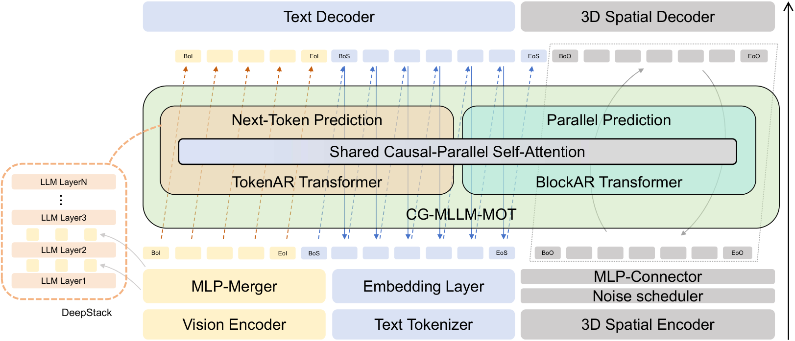
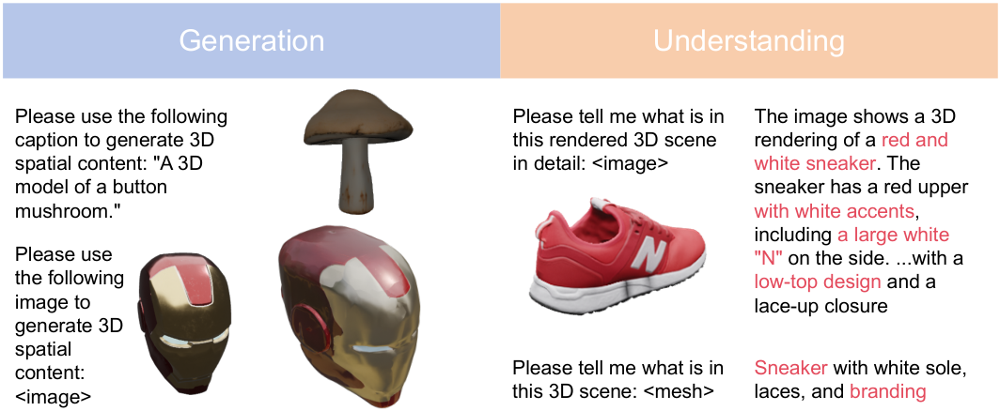
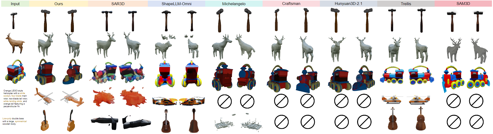

Abstract
Large Language Models (LLMs) have revolutionized text generation and multimodal perception, but their capabilities in 3D content generation remain underexplored. Existing methods compromise by producing either low-resolution meshes or coarse structural proxies, failing to capture fine-grained geometry natively. In this paper, we propose CG-MLLM, a novel Multi-modal Large Language Model (MLLM) capable of 3D captioning and high-resolution 3D generation in a single framework. Leveraging the Mixture-of-Transformer architecture, CG-MLLM decouples disparate modeling needs, where the Token-level Autoregressive (TokenAR) Transformer handles token-level content, and the Block-level Autoregressive (BlockAR) Transformer handles block-level content. By integrating a pre-trained vision-language backbone with a specialized 3D VAE latent space, CG-MLLM facilitates long-context interactions between standard tokens and spatial blocks within a single integrated architecture. Experimental results show that CG-MLLM significantly outperforms existing MLLMs in generating high-fidelity 3D objects, effectively bringing high-resolution 3D content creation into the mainstream LLM paradigm. Beyond generation, we further observe that learning to produce 3D content transfers back to perception, strengthening the model's image-based 3D understanding.
Method Overview

Figure 1. The Pipeline of CG-MLLM. Our multimodal architecture processes vision, text, and 3D spatial inputs to generate text and 3D spatial outputs. It features a TokenAR Transformer for sequential next-token prediction and a BlockAR Transformer for efficient parallel block prediction, both governed by strict causal masking.

Figure 2. Our approach unifies spatial perception and generation in a single model, supporting image understanding, point cloud understanding, mesh generation, and textual intent understanding across multiple spatial modalities.
Performance

Comparison with other methods on the image-to-3D task. For clearer visualization of geometry, materials are removed in the second row. Compared with MLLM-based methods, our method generates more complete geometry, while achieving comparable visual quality to non-MLLM methods.
| Method | p-FID ↓ | p-KID ↓ | CLIP-IQA+ ↑ | MUSIQ ↑ | CLIP ↑ | User Study ↑ |
|---|---|---|---|---|---|---|
| Non-MLLM-Based | ||||||
| Michelangelo | 17.96 | 0.56 | 0.45 | 71.42 | 84.08 | 2.60 |
| CraftsMan | 14.09 | 0.40 | 0.45 | 71.09 | 84.86 | 3.15 |
| Hunyuan3D-2.1 | 16.80 | 0.53 | 0.47 | 71.20 | 85.11 | 3.15 |
| TRELLIS | 7.36 | 0.12 | 0.44 | 66.97 | 84.13 | 3.28 |
| SAM3D | 33.92 | 1.13 | 0.47 | 70.21 | 84.67 | 3.45 |
| MLLM-Based | ||||||
| SAR3D | 30.07 | 1.00 | 0.42 | 66.01 | 82.86 | 2.93 |
| ShapeLLM-Omni | 13.11 | 0.29 | 0.37 | 55.71 | 84.18 | 2.30 |
| Ours | 12.55 | 0.27 | 0.45 | 71.65 | 84.47 | 3.32 |
Performance comparison with Non-MLLM-based and MLLM-based 3D generative models. The best results in each column are highlighted in red, while the second-best results are highlighted in yellow.
| Model | BLEU-1 ↑ | ROUGE-L ↑ | METEOR ↑ |
|---|---|---|---|
| 3D latent Inputs | |||
| 3D-LLM | 16.91 | 19.48 | 19.73 |
| PointLLM-13B | 17.09 | 20.99 | 16.45 |
| ShapeLLM-Omni-7B | 18.51 | 21.37 | 19.89 |
| Image Inputs | |||
| InstructBLIP-13B | 4.65 | 8.85 | 13.23 |
| LLaVA-13B | 4.02 | 8.15 | 12.58 |
| Qwen3-VL-2B | 3.13 | 7.21 | 11.92 |
| Ours-2B MOT | 13.51 | 19.13 | 14.28 |
Quantitative comparison on 3D object captioning metrics. The best results in each column are highlighted in red, while the second-best results are highlighted in yellow.
BibTeX
@misc{huang2026cgmllmcaptioninggenerating3d,
title={CG-MLLM: Captioning and Generating 3D content via Multi-modal Large Language Models},
author={Junming Huang and Chi Wang and Letian Li and Guangkai Xu and Donglin Huang and Hao Chen and Qiang Dai and Weiwei Xu},
year={2026},
eprint={2601.21798},
archivePrefix={arXiv},
primaryClass={cs.CV},
url={https://arxiv.org/abs/2601.21798},
}